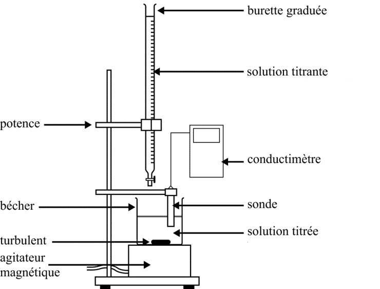

Documents
Le Destop®
Le Destop® est un déboucheur de canalisation, c’est à dire une solution qui dissout intégralement et rapidement les matières organiques.
Différentes solutions existent sur le marché. Afin de préserver les canalisations, « l’agent actif » du Destop® est l’hydroxyde de sodium.
On peut lire sur l’étiquette d’un flacon de Destop® :
- Pourcentage en masse d’hydroxyde de sodium : 20 %.
- Densité de la solution par rapport à l’eau : 1,23.
Stockage
Produit corrosif. Provoque des brûlures de la peau et des lésions oculaires graves. Garder sous clef. Tenir hors de portée des enfants.
Sécurité
- En cas d’ingestion : rincer la bouche. NE PAS faire vomir.
- En cas de contact avec les yeux : rincer avec précaution à l’eau pendant plusieurs minutes. Enlever les lentilles de contact si la victime en porte et si elles peuvent être facilement enlevées. Continuer à rincer.
- En cas de contact avec la peau (ou les cheveux) : enlever immédiatement les vêtements contaminés. Rincer la peau à l’eau/se doucher.
Hydroxyde de sodium
L’hydroxyde de sodium $\ce{NaOH (s)}$ est un solide ionique qui se dissocie totalement dans l’eau et forme alors la solution de soude $(\ce{Na^+ (aq) + OH^- (aq)})$.
L’ion hydroxyde $\ce{OH^-}$ est la base la plus forte que l’on peut trouver dans l’eau.
Acide chlorhydrique
Une solution d’acide chlorhydrique a pour formule $\ce{H3O^+ + Cl^- (aq)}$.
L’ion oxonium $\ce{H3O^+}$ est l’acide le plus fort que l’on peut trouver dans l’eau.
Équivalence d’un titrage
- On appelle équivalence d’un titrage le point du titrage où on change de réactif limitant.
- À l’équivalence les réactifs ont été introduits dans les proportions stœchiométriques.
Séance
Objectif
L’objectif de cette séance est de vérifier que les informations relatives à l’hydroxyde de sodium, sur l’étiquette d’une bouteille de Destop®, sont vraies.
Données : conductivités molaires ioniques
$\lambda_{\ce{Na^+}} = \pu{5,01e-3 S.m2.mol-1}$ ; $\lambda_{\ce{Cl^-}} = \pu{7,63e-3 S.m2.mol-1}$ ; $\lambda_{\ce{H3O^+}} = \pu{34,97e-3 S.m2.mol-1}$ ; $\lambda_{\ce{OH^-}} = \pu{19,80e-3 S.m2.mol-1}$.
Matériel à disposition
-
Solution de Destop® diluée 200 fois.
-
Solution d’acide chlorhydrique de concentration $C_A = \pu{2,5e-2 mol.L-1}$.
-
Conductimètre et sonde, agitateur et barreau aimanté, burette graduée $\pu{25 mL}$, pipette jaugée $\pu{10 mL}$ et propipette, éprouvette graduée, béchers, eau distillée.
Travail expérimental
-
Élaborer un protocole expérimental permettant de titrer $V_B = \pu{10 mL}$ d’une solution de Destop® diluée 200 fois.
-
Écrire l’équation de la réaction de titrage.
-
Quelles propriétés doit présenter une réaction chimique utilisée pour réaliser un titrage ?
-
Mettre en œuvre le protocole expérimental.
-
Justifier l’allure de la courbe $\sigma = f(V_A)$.
-
Quelle est la concentration en ions hydroxyde dans la solution titrée ?
-
Quelle est la concentration en ions hydroxyde dans le Destop® ?
-
Les informations sur l’étiquette d’une bouteille de Destop® sont-elles correctes ?